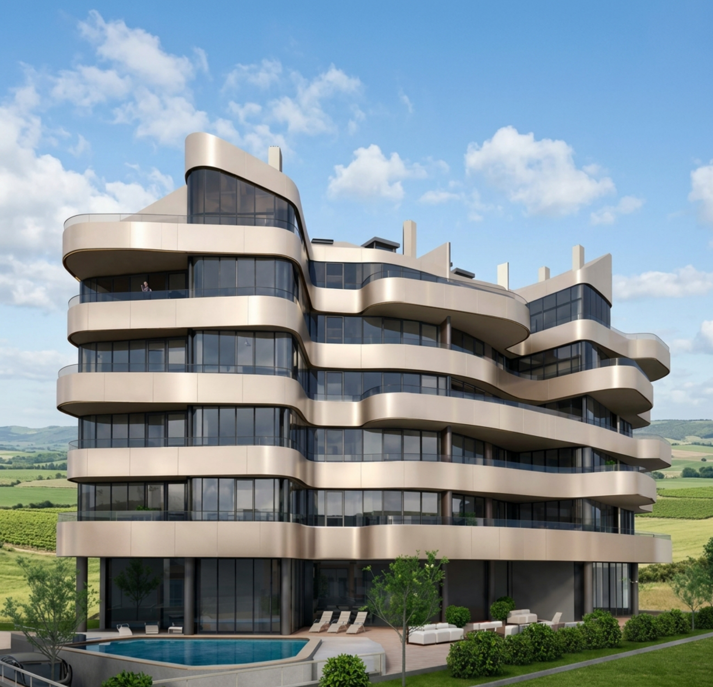

Nueva Promoción Exclusiva


Mirador de Salinas
El nuevo referente residencial de la costa asturiana. 24 residencias de autor donde la arquitectura de vanguardia y el Cantábrico se funden en un estilo de vida sin precedentes.
